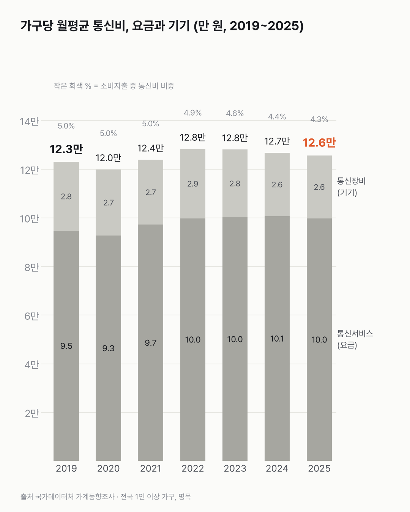
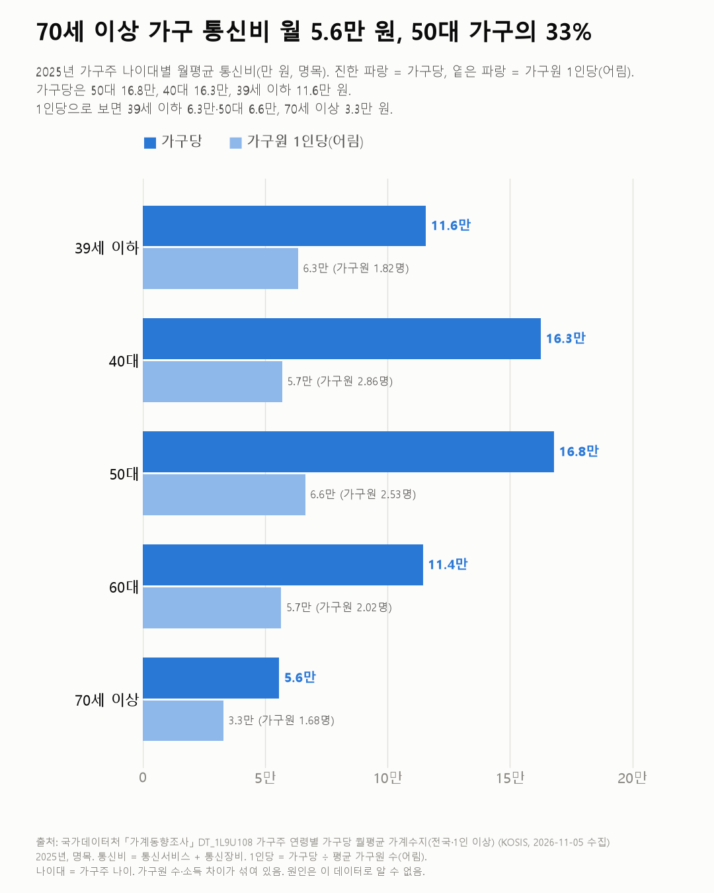

우리 집 통신비, 몇 년째 한 달 12만 원 안팎이에요
가구 통신비는 몇 년째 비슷해요. 생활비 전체가 늘어서, 그 안에서 통신비가 차지하는 비중은 줄었어요.

3줄 요약
- 2025년 가구당 통신비는 한 달 12.6만 원이에요. 2019년(12.3만 원)부터 12.0만~12.8만 원 사이를 오갔어요.
- 생활비(소비지출)에서 통신비가 차지하는 비중은 2019년 5.0%에서 2025년 4.3%로 줄었어요.
- 2025년 가구주가 50대인 가구는 16.8만 원, 70세 이상인 가구는 5.6만 원을 써요.
매달 같은 날, 통장에서 휴대폰 요금과 인터넷 요금이 빠져나가요. 그 돈이 한 집에 얼마인지 7년 치 표를 따라가 봤어요.
2025년엔 한 달 12.6만 원이었어요. 요금(통신서비스)이 10.0만 원, 폰 같은 통신장비가 2.6만 원이에요. 2019년(12.3만 원) 뒤로 12.0만~12.8만 원 사이에 머물렀어요. 생각보다 고르더라고요.
생활비에서 차지하는 비중은 줄었어요. 소비지출 중 통신비 비중은 5.0%(2019)에서 4.3%(2025)가 됐어요. 같은 기간 소비지출은 246만 원에서 294만 원으로 늘었어요.
사람 수로 나눠 보면 조금 달라요. 가구원 1인당으로 어림하면 5.1만 원에서 5.7만 원이 됐어요. 가구당 금액이 비슷한 데엔 가구원 수가 줄어든 영향도 섞여 있어요.
가구주 나이대별로는 50대 가구 16.8만, 40대 16.3만, 39세 이하 11.6만, 60대 11.4만, 70세 이상 5.6만 원이에요(2025). 1인당으로 보면 39세 이하 6.3만, 50대 6.6만, 70세 이상 3.3만 원이에요.

1인당으로 보면 39세 이하와 50대가 거의 같아요. 집에 휴대폰이 몇 대인지는 이 표에 없어서, 한 대에 얼마가 드는지까지는 셀 수 없었어요.
이 숫자는 어디서 왔나요
출처
기준일 2019~2025년이에요.
국가데이터처가계동향조사
- 가구주 연령별 가구당 월평균 가계수지KOSIS DT_1L9U108원본 보기
2019~2025 연, 전국·1인 이상 가구
어떻게 셌나요
- 국가데이터처 「가계동향조사」예요. 전국 1인 이상 가구의 한 달 평균 지출을 썼어요.
- 통신비는 통신서비스(휴대전화·인터넷 요금 등)와 통신장비(휴대폰 등 구입)를 합친 거예요. 같은 '08.정보통신' 대분류에 있는 OTT 등 콘텐츠 이용료, 컴퓨터·영상음향기기는 뺐어요.
- 가구당 금액이고 명목이에요. 가구원 수가 2019년 2.41명에서 2025년 2.19명으로 줄었어요. 1인당 값은 가구당 금액을 가구원 수로 나눈 어림이에요.
- 나이대는 가구주 나이 기준이에요.
- 2019년부터 지출 분류가 바뀌어 2018년 이전과 잇지 않았어요.
한계 4가지
이 데이터로 말할 수 없는 것
- 휴대폰을 할부로 사면 기기값이 통신서비스 요금 고지서에 섞여 나가지만, 이 조사가 어느 쪽에 넣는지는 조사 지침에 따라요. 장비·서비스 나눔은 그대로 읽기보다 둘을 합친 통신비로 보는 게 안전해요.
- 명목이에요. 통신 요금 물가는 서비스 물가 글에서 다뤘어요.
- 가구주 나이 기준이라 가구원 수·소득 차이가 섞여 있어요. 1인당 값은 가구원 수로 단순히 나눈 어림값이에요. '부담이 크다/작다'는 이 데이터로 말할 수 없어요.
- 1인 가구 지출 전체는 1인 가구 지출 글, 나이별 폰 제조사는 폰 제조사 글에서 다뤘어요.
새 글 나오면 받아 보기
피드 리더 앱에 이 사이트 주소를 한 번 넣어 두면, 새 글이 올라올 때 앱에 떠요. 가입이나 메일 주소는 필요 없어요.
받는 법 보기
- 피드 리더 앱을 하나 골라요. 새 글을 모아 보여 주는 앱이에요. 예를 들면 Feedly나 Inoreader가 있어요. 둘 다 무료고 웹·휴대폰에서 써요.
- 앱에서 '구독 추가'(+)를 누르고 아래 주소를 붙여 넣어요.
- 끝이에요. 새 글이 올라오면 앱 목록에 떠요.
https://protofu.github.io/opendata-insight/feed.xmlFeedly를 쓴다면 여기를 눌러 바로 추가할 수도 있어요.